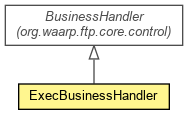

org.waarp.gateway.ftp.control
Class ExecBusinessHandler
java.lang.Object
 org.waarp.ftp.core.control.BusinessHandler
org.waarp.gateway.ftp.control.ExecBusinessHandler
org.waarp.ftp.core.control.BusinessHandler
org.waarp.gateway.ftp.control.ExecBusinessHandler
public class ExecBusinessHandler
- extends org.waarp.ftp.core.control.BusinessHandler

BusinessHandler implementation that allows pre and post actions on any operations and
specifically on transfer operations
- Author:
- Frederic Bregier
|
Field Summary |
org.waarp.common.database.DbSession |
dbFtpSession
Associated DbFtpSession |
org.waarp.common.database.DbSession |
dbR66Session
Associated DbR66Session |
| Methods inherited from class org.waarp.ftp.core.control.BusinessHandler |
clear, getDefaultFeatMessage, getFtpSession, getMLSxOptsMessage, getNetworkHandler, getSslFeatMessage, setNetworkHandler |
| Methods inherited from class java.lang.Object |
clone, equals, finalize, getClass, hashCode, notify, notifyAll, toString, wait, wait, wait |
dbFtpSession
public org.waarp.common.database.DbSession dbFtpSession
- Associated DbFtpSession
dbR66Session
public org.waarp.common.database.DbSession dbR66Session
- Associated DbR66Session
ExecBusinessHandler
public ExecBusinessHandler()
afterTransferDoneBeforeAnswer
public void afterTransferDoneBeforeAnswer(org.waarp.ftp.core.data.FtpTransfer transfer)
throws org.waarp.common.command.exception.CommandAbstractException
- Specified by:
afterTransferDoneBeforeAnswer in class org.waarp.ftp.core.control.BusinessHandler
- Throws:
org.waarp.common.command.exception.CommandAbstractException
afterRunCommandKo
public void afterRunCommandKo(org.waarp.common.command.exception.CommandAbstractException e)
- Specified by:
afterRunCommandKo in class org.waarp.ftp.core.control.BusinessHandler
afterRunCommandOk
public void afterRunCommandOk()
throws org.waarp.common.command.exception.CommandAbstractException
- Specified by:
afterRunCommandOk in class org.waarp.ftp.core.control.BusinessHandler
- Throws:
org.waarp.common.command.exception.CommandAbstractException
beforeRunCommand
public void beforeRunCommand()
throws org.waarp.common.command.exception.CommandAbstractException
- Specified by:
beforeRunCommand in class org.waarp.ftp.core.control.BusinessHandler
- Throws:
org.waarp.common.command.exception.CommandAbstractException
cleanSession
protected void cleanSession()
- Specified by:
cleanSession in class org.waarp.ftp.core.control.BusinessHandler
exceptionLocalCaught
public void exceptionLocalCaught(ExceptionEvent e)
- Specified by:
exceptionLocalCaught in class org.waarp.ftp.core.control.BusinessHandler
executeChannelClosed
public void executeChannelClosed()
- Specified by:
executeChannelClosed in class org.waarp.ftp.core.control.BusinessHandler
executeChannelConnected
public void executeChannelConnected(Channel channel)
- Specified by:
executeChannelConnected in class org.waarp.ftp.core.control.BusinessHandler
getBusinessNewAuth
public FileBasedAuth getBusinessNewAuth()
- Specified by:
getBusinessNewAuth in class org.waarp.ftp.core.control.BusinessHandler
getBusinessNewDir
public FileBasedDir getBusinessNewDir()
- Specified by:
getBusinessNewDir in class org.waarp.ftp.core.control.BusinessHandler
getBusinessNewRestart
public org.waarp.ftp.filesystembased.FilesystemBasedFtpRestart getBusinessNewRestart()
- Specified by:
getBusinessNewRestart in class org.waarp.ftp.core.control.BusinessHandler
getHelpMessage
public String getHelpMessage(String arg)
- Specified by:
getHelpMessage in class org.waarp.ftp.core.control.BusinessHandler
getFeatMessage
public String getFeatMessage()
- Specified by:
getFeatMessage in class org.waarp.ftp.core.control.BusinessHandler
getOptsMessage
public String getOptsMessage(String[] args)
throws org.waarp.common.command.exception.CommandAbstractException
- Specified by:
getOptsMessage in class org.waarp.ftp.core.control.BusinessHandler
- Throws:
org.waarp.common.command.exception.CommandAbstractException
getSpecializedSiteCommand
public org.waarp.ftp.core.command.AbstractCommand getSpecializedSiteCommand(org.waarp.ftp.core.session.FtpSession session,
String line)
- Specified by:
getSpecializedSiteCommand in class org.waarp.ftp.core.control.BusinessHandler
Copyright © 2009-2012 Waarp. All Rights Reserved.